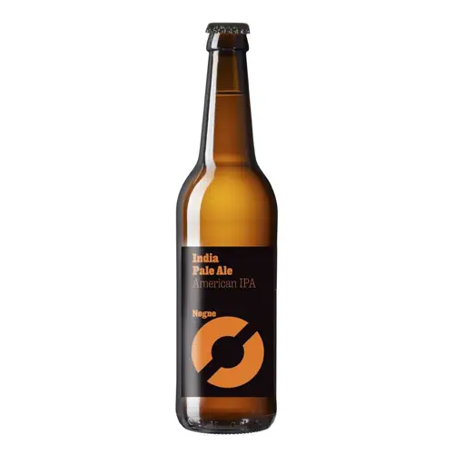
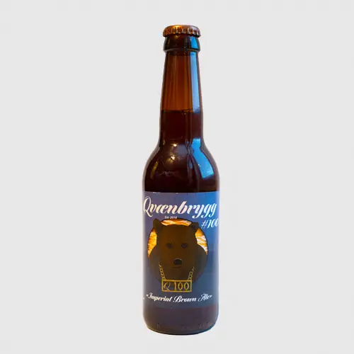

Akershus
Wettre Terapils

Terapils er en øl for de som setter pris på både kompleksitet og enkelhet i én og samme flaske. Den byr på en frisk, lettdrikkelig karakter samtidig som den holder på en smakfull dybde som gjør at hver slurk føles som en liten nytelse. Enten det er til en god middag, eller som en avslutning på en lang dag, er Wettre Terapils et valg som gir både trøst og glede.


Buskerud
AASS Halling
Aass Halling er en øl som på mange måter fanger essensen av det norske landskapet og folket. Med sin mørke farge og robuste smak gir den en ekte smak av Norge – en øl som kombinerer den rike historien fra Hallingdal med moderne bryggerikunster. Denne mørke og fyldige bayeren har en balansert maltprofil, der sødmefulle karamell- og brødagder møter en mild bitterhet som gjør hver slurk til en rik og tilfredsstillende opplevelse.
Innlandet
Trysil 1132
Denne ølen er en flott representant for det som kan kalles norsk håndverksbrygging, og gir et godt inntrykk av både historien og naturen til Trysil. Trysil 1132 er en øl som man kan lene seg tilbake og nyte, samtidig som man tenker på den utrolige naturen og den tidløse tradisjonen som området står for.


Oslo
Sagene pilsner
Vestibulum ante ipsum primis in faucibus orci luctus et ultrices posuere cubilia curae; Nunc tempor congue aliquet. Donec maximus erat ex, id lobortis nisl semper ut. Mauris id sagittis mauris. Praesent quis nulla eget erat vehicula sodales. Sed fermentum ante dui, viverra egestas eros bibendum at. Nam auctor pulvinar sem nec finibus.
Telemark
Lindheim Lords of Acid
Vestibulum ante ipsum primis in faucibus orci luctus et ultrices posuere cubilia curae; Nunc tempor congue aliquet. Donec maximus erat ex, id lobortis nisl semper ut. Mauris id sagittis mauris. Praesent quis nulla eget erat vehicula sodales. Sed fermentum ante dui, viverra egestas eros bibendum at. Nam auctor pulvinar sem nec finibus.

Vestfold
Vestibulum ante ipsum primis in faucibus orci luctus et ultrices posuere cubilia curae; Nunc tempor congue aliquet. Donec maximus erat ex, id lobortis nisl semper ut. Mauris id sagittis mauris. Praesent quis nulla eget erat vehicula sodales. Sed fermentum ante dui, viverra egestas eros bibendum at. Nam auctor pulvinar sem nec finibus.

Østfold
Vestibulum ante ipsum primis in faucibus orci luctus et ultrices posuere cubilia curae; Nunc tempor congue aliquet. Donec maximus erat ex, id lobortis nisl semper ut. Mauris id sagittis mauris. Praesent quis nulla eget erat vehicula sodales. Sed fermentum ante dui, viverra egestas eros bibendum at. Nam auctor pulvinar sem nec finibus.
Vestlandet
Møre og Romsdal
Vestibulum ante ipsum primis in faucibus orci luctus et ultrices posuere cubilia curae; Nunc tempor congue aliquet. Donec maximus erat ex, id lobortis nisl semper ut. Mauris id sagittis mauris. Praesent quis nulla eget erat vehicula sodales. Sed fermentum ante dui, viverra egestas eros bibendum at. Nam auctor pulvinar sem nec finibus.
Rogaland
Vestibulum ante ipsum primis in faucibus orci luctus et ultrices posuere cubilia curae; Nunc tempor congue aliquet. Donec maximus erat ex, id lobortis nisl semper ut. Mauris id sagittis mauris. Praesent quis nulla eget erat vehicula sodales. Sed fermentum ante dui, viverra egestas eros bibendum at. Nam auctor pulvinar sem nec finibus.
Vestland
Vestibulum ante ipsum primis in faucibus orci luctus et ultrices posuere cubilia curae; Nunc tempor congue aliquet. Donec maximus erat ex, id lobortis nisl semper ut. Mauris id sagittis mauris. Praesent quis nulla eget erat vehicula sodales. Sed fermentum ante dui, viverra egestas eros bibendum at. Nam auctor pulvinar sem nec finibus.
Nord-Norge
Finnmark
Qvænbrygg #100
Vestibulum ante ipsum primis in faucibus orci luctus et ultrices posuere cubilia curae; Nunc tempor congue aliquet. Donec maximus erat ex, id lobortis nisl semper ut. Mauris id sagittis mauris. Praesent quis nulla eget erat vehicula sodales. Sed fermentum ante dui, viverra egestas eros bibendum at. Nam auctor pulvinar sem nec finibus.

Nordland
Lofotpils Fjell Stout
Vestibulum ante ipsum primis in faucibus orci luctus et ultrices posuere cubilia curae; Nunc tempor congue aliquet. Donec maximus erat ex, id lobortis nisl semper ut. Mauris id sagittis mauris. Praesent quis nulla eget erat vehicula sodales. Sed fermentum ante dui, viverra egestas eros bibendum at. Nam auctor pulvinar sem nec finibus.
Troms
Isbjørn Sommerøl
Vestibulum ante ipsum primis in faucibus orci luctus et ultrices posuere cubilia curae; Nunc tempor congue aliquet. Donec maximus erat ex, id lobortis nisl semper ut. Mauris id sagittis mauris. Praesent quis nulla eget erat vehicula sodales. Sed fermentum ante dui, viverra egestas eros bibendum at. Nam auctor pulvinar sem nec finibus.

Trøndelag
Trøndelag
Vestibulum ante ipsum primis in faucibus orci luctus et ultrices posuere cubilia curae; Nunc tempor congue aliquet. Donec maximus erat ex, id lobortis nisl semper ut. Mauris id sagittis mauris. Praesent quis nulla eget erat vehicula sodales. Sed fermentum ante dui, viverra egestas eros bibendum at. Nam auctor pulvinar sem nec finibus.
Sørlandet
Agder
Nøgne Ø Pale Ale
Vestibulum ante ipsum primis in faucibus orci luctus et ultrices posuere cubilia curae; Nunc tempor congue aliquet. Donec maximus erat ex, id lobortis nisl semper ut. Mauris id sagittis mauris. Praesent quis nulla eget erat vehicula sodales. Sed fermentum ante dui, viverra egestas eros bibendum at. Nam auctor pulvinar sem nec finibus.